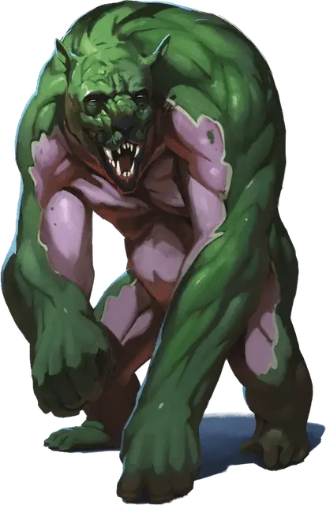

Эорский обратитель
Aeorian Reverser
Большой Монстр, нейтрально-злой

Класс Доспеха 15 (природный доспех)
Хиты 133 (14к10 + 56)
Скорость 40 футов, лазая 40 футов
| мод | спас | ||
|---|---|---|---|
| СИЛ | 21 | +5 | +5 |
| ЛОВ | 16 | +3 | +3 |
| ТЕЛ | 18 | +4 | +4 |
| мод | спас | ||
|---|---|---|---|
| ИНТ | 6 | −2 | −2 |
| МДР | 14 | +2 | +6 |
| ХАР | 8 | −1 | +2 |
Навыки Восприятие +5, Выживание +5, Скрытность +6
Иммунитет к урону излучение, некротическая энергия
Чувства тёмное зрение 120 футов, пассивное Восприятие 15
Языки понимает Драконий, но не говорит на нём
Опасность 8 (3900 опыта)
Бонус мастерства +3
Особенности
Сопротивление магии. Обратитель совершает с преимуществом спасброски от заклинаний и прочих магических эффектов.
Действия
Мультиатака. Обратитель совершает три атаки: одну Укусом и две Когтями.
Укус. . Рукопашная атака оружием: +8 к попаданию, досягаемость 5 футов, одно существо. Попадание: 11 (1к12 + 5) колющего урона плюс 6 (1к12) урона силовым полем.
Когти. . Рукопашная атака оружием: +8 к попаданию, досягаемость 5 футов, одна цель. Попадание: 8 (1к6 + 5) рубящего урона плюс 7 (2к6) урона силовым полем.
Реакции
Разворот. Когда существо, которое обратитель может видеть в пределах 30 футов, восстанавливает хиты, обратитель уменьшает количество восстановленных хитов до 0, и обратитель наносит существу 13 (3к8) урона силовым полем.
Описание
Обратитель — ужасный враг в ближнем бою, он атакует других существ зубами и когтями. Но хаос, который он создаёт, намного страшнее, поскольку исцеляющая магия его врагов разрушена и обращена против них.
Эорские охотники
Призванный к жизни магами в летающем городе Эор в Эпоху Арканума, эорские охотники были созданы для борьбы с ангелами, демонами, дьяволами, феями и самими богами. Когда Эор врезался в Эйзелкросс, многие из этих магически мутировавших монстров выжили, и теперь они бродят по руинам Эора и ледяным пустошам островов.
Созданные путём экспериментов. Эорские охотники были созданы путем тайных экспериментов на животных и гуманоидах — как пленниках, так и добровольцах. Эти эксперименты привели к появлению чудовищ с ярко окрашенной плотью и способностью противостоять врагам Эора и уничтожать их. Существует теория, что маги Эора, должно быть, обладали каким-то средством управления своими монструозными солдатами, но в пустошах Эйзелкросса такого устройства пока не найдено. Драконий был языком, который эти маги использовали для обучения и подчинения эорских охотников, и охотники сохраняют понимание этого языка, даже если они не могут на нем говорить.
Безумие через бессмертие. Эорские охотники не стареют. Таким образом, жажда насилия, которую их создатели вселили в их умы, стала ненасытной после столетий без войн. Большинство немедленно нападают на любое существо, которое они видят.
Никогда не причиняй вреда другому охотнику. Хотя они жаждут насилия, эорские охотники никогда не нападали друг на друга. Большинство ученых полагают, что маги Эора, должно быть, привили им такое поведение, учитывая стоимость золота и магии, необходимую для создания каждого охотника. Некоторые искатели приключений в Эйзелкроссе хвастаются тем, что пробираются мимо эорских охотников, используя маскировку или иллюзии, чтобы имитировать внешность охотника, но это, скорее всего, небылицы.
Бессмертные воспоминания. Каждый эорский охотник прекрасно помнит всё с момента его создания. Их ограниченный интеллект и стремление к насилию мешают им эффективно общаться, но каждый охотник хранит в своем сознании огромное количество знаний, часто включая местонахождение редких эорских реликвий.
Идеальные солдаты. Эорским охотникам не нужны ни еда, ни питье.